REPARACIÓN DE LOS COMPONENTES
Componentes de la culata y del tren de válvulas
Herramientas necesarias
Reloj comparador MKM-571-B
Juego de fresas KM-340-0
Fresador de asientos de válvulas KM-340-7
Fresas KM-340-13
Fresas KM-340-26
Compresor de muelles de válvula KM-348
Adaptador KM-653
Escariador de guías de válvula KM-805
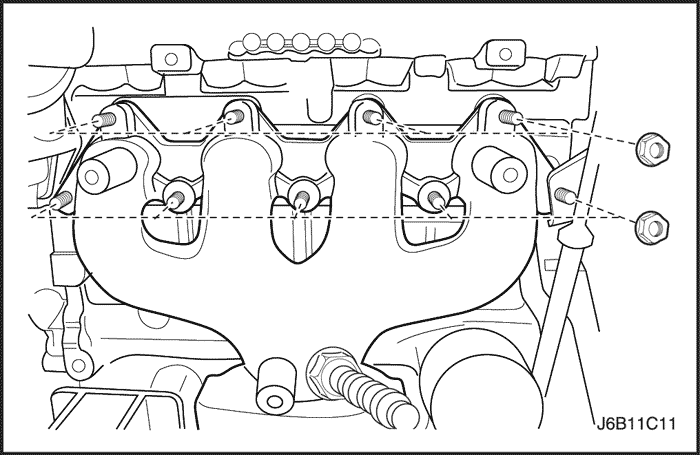


Procedimiento de desmontaje
- Desmonte la culata con el colector de admisión y el colector de escape unidos a la misma. Consulte el apartado "Culata y junta de culata" de esta sección.
- Quite los tornillos del escudo térmico del colector de escape.
- Desmonte el escudo térmico del colector de escape.
- Quite las tuercas de fijación del colector de escape en la secuencia indicada.
- Desmonte el colector de escape.
- Retire la junta del colector de escape.
- Quite los espárragos del colector de escape.
- Quite los tornillos de fijación de la caja del termostato.
- Desmonte el conjunto de la caja del termostato. Consulte la Sección 1D, Sistema de refrigeración del motor.
- Desmonte la rampa de inyectores de combustible. Consulte la Sección 1F, Controles del motor.
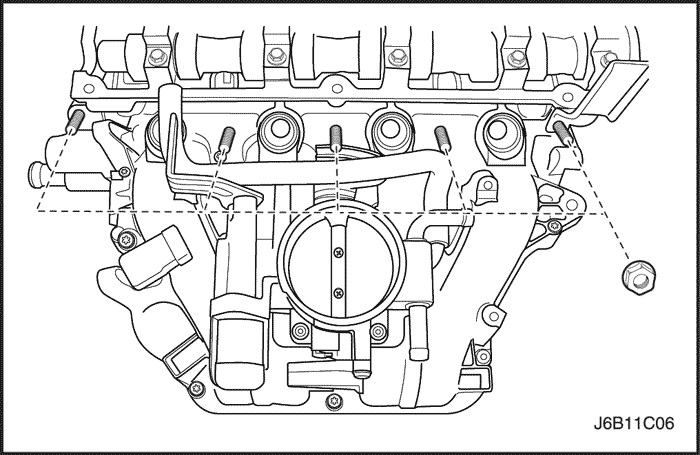
- Quite las tuercas y el tornillo de fijación del colector de admisión en la secuencia indicada.
- Desmonte el colector de admisión.
- Retire la junta del colector de admisión.
- Desmonte la válvula de EGR. Consulte la Sección 1F, Controles del motor.
- Quite los espárragos del colector de admisión.
- Desmonte las bujías.
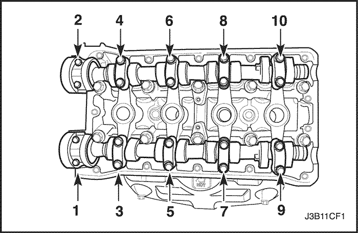
- Quite los tornillos de las tapas de los cojinetes de los árboles de levas de manera gradual y en la secuencia indicada para cada tapa.
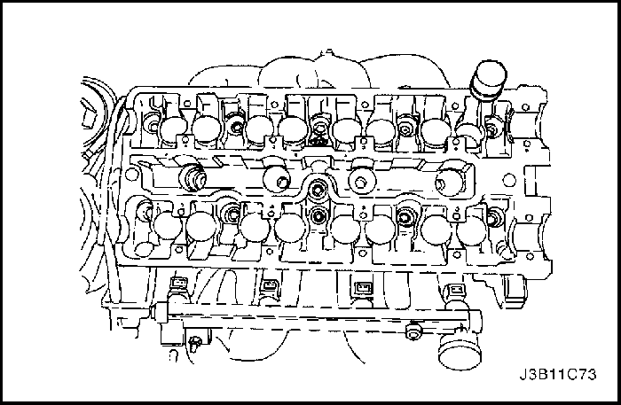
- Desmonte las tapas del árbol de levas de admisión. Mantenga las posiciones correctas de cara al montaje.
- Desmonte el árbol de levas de admisión.
- Desmonte los dispositivos de ajuste de los taqués de las válvulas de admisión.
- Desmonte las tapas del árbol de levas de escape. Mantenga las posiciones correctas de cara al montaje.
- Desmonte el árbol de levas de escape.
- Desmonte los dispositivos de ajuste de los taqués de las válvulas de escape.
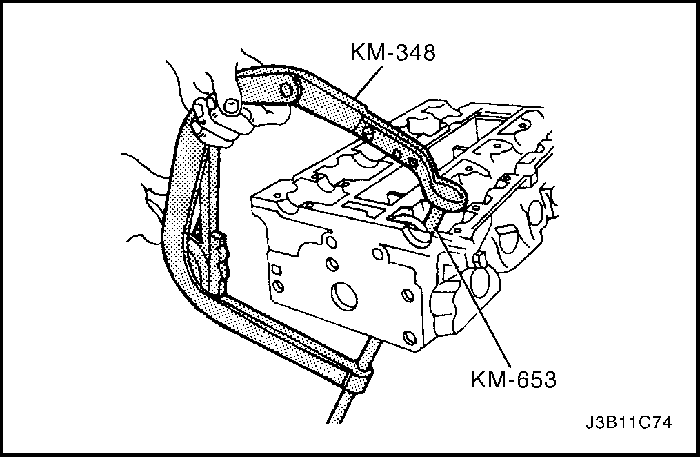
- Comprima los muelles de las válvulas con el compresor de muelles de válvula KM-348 y el adaptador KM-653.
- Desmonte las chavetas de retención de las válvulas.
- Desmonte el compresor de muelles de válvula KM-348 y el adaptador KM-653.
- Desmonte los platillos de muelle de las válvulas.
- Desmonte los muelles de válvula. Mantenga la posición original de estos muelles de cara a su montaje de nuevo.
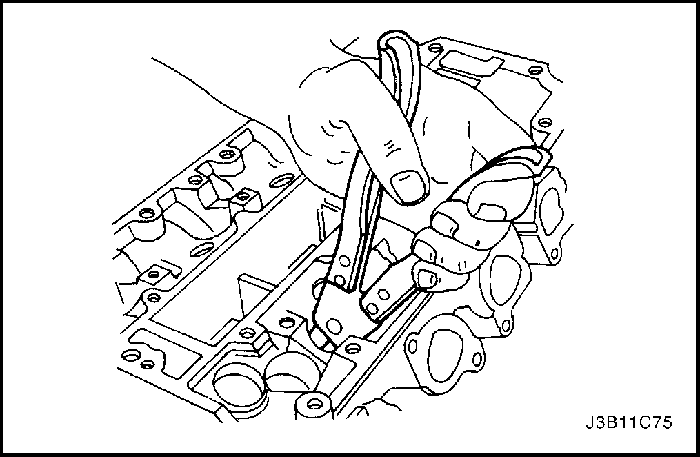
- Desmonte las válvulas. Mantenga la posición original de las mismas de cara a su montaje.
- Desmonte los retenes de vástagos de válvulas.
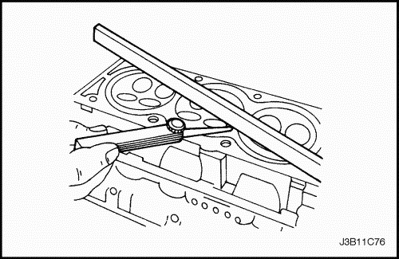
Comprobación de la culata
- Limpie las superficies de cierre.
- Compruebe la junta de la culata y las superficies de acoplamiento en busca de fugas, corrosión o de signos de infiltración de gases.
- Compruebe si hay grietas en la culata.
- Verifique la longitud y la anchura de la culata con una regla y una galga.
- Compruebe la existencia de deformaciones y alabeo en las superficies de cierre. Las superficies de cierre de la culata deben ser planas con una tolerancia máxima de 0,025 mm (0,001 pulgadas).
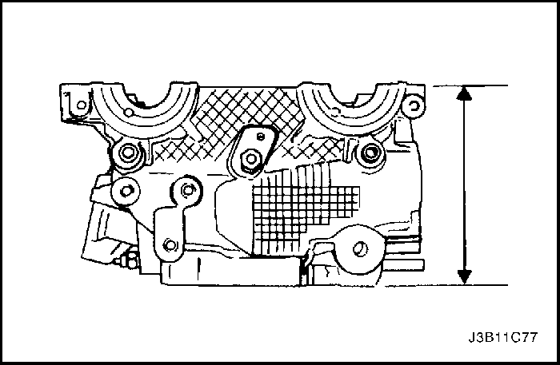
- Mida la altura de la culata, de superficie de cierre a superficie de cierre. La altura de la culata debe estar entre 135,90 y 135,96 mm (5,350 y 5,353 pulg.). Si la altura de la culata fuera inferior a 135,63 mm (5,340 pulg.), sustituya la culata.
- Compruebe todos los taladros roscados en busca de daños.
- Compruebe si hay un desgaste excesivo o quemaduras en los asientos de las válvulas.
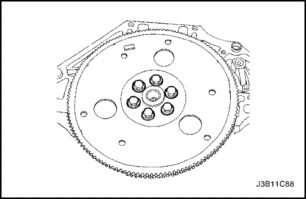
Cigüeñal
Herramientas necesarias
Soporte de reparación del motor KM-412
Medidor de par angular KM-470-B
Instalador del retén de aceite trasero del cigüeñal J-36792 ó KM-635
Aviso: Tenga mucho cuidado de no rayar, mellar o dañar los árboles de levas.
Procedimiento de desmontaje
- Desmonte el motor. Consulte el apartado "Motor" de esta sección.
- Quite los tornillos del volante motor o de la placa de acoplamiento flexible.
- Desmonte el volante motor o la placa de acoplamiento flexible.
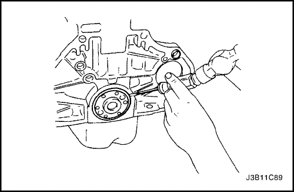
- Desmonte el retén de aceite trasero del cigüeñal.
- Monte el conjunto del motor en el soporte de reparación KM-412.
- Desmonte la culata. Consulte el apartado "Culata y junta de culata" de esta sección.
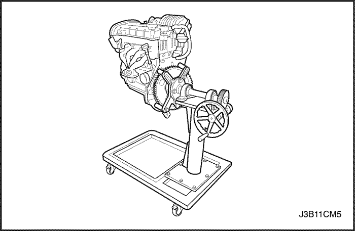
- Haga girar el motor sobre su soporte de reparación KM-412.
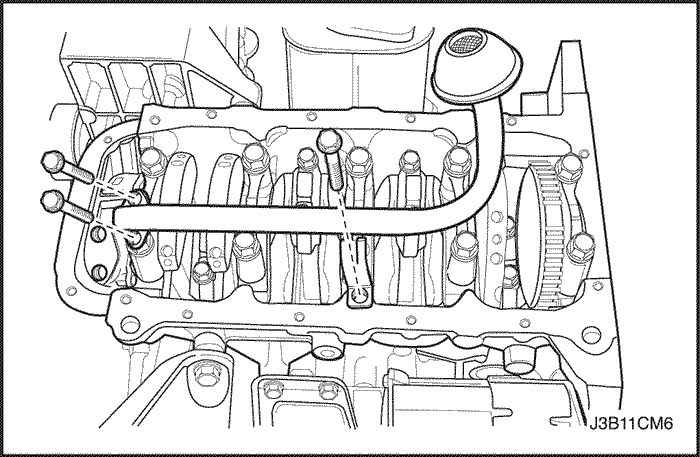
- Quite los tornillos de fijación del cárter del aceite.
- Desmonte el cárter del aceite.
- Quite los tornillos del tubo de aspiración de aceite.
- Desmonte el tubo de aspiración de aceite.
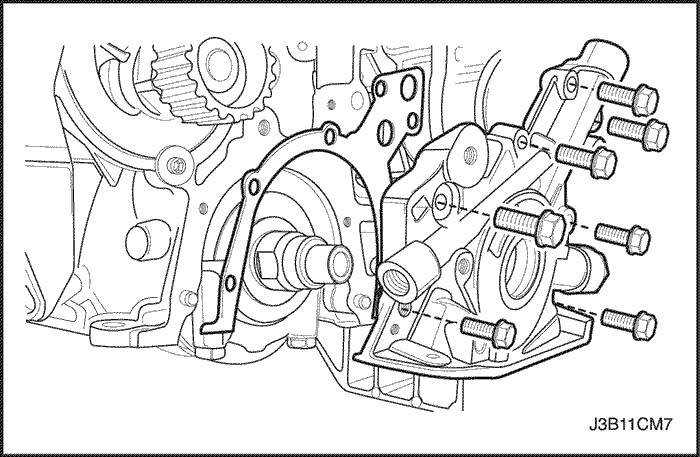
- Quite los tornillos de retención de la bomba del aceite.
- Desmonte la bomba de aceite.
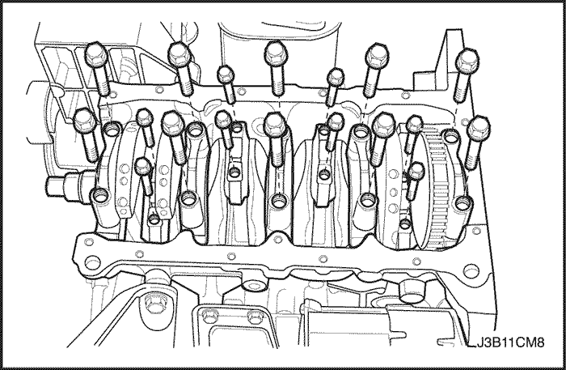
- Marque el orden de las tapas de los cojinetes de biela.
- Quite los tornillos de las tapas de los cojinetes de biela de todos los pistones.
- Desmonte las tapas de los cojinetes de biela y los semicojinetes inferiores de las bielas.
- Desmonte los semicojinetes superiores de biela.
- Marque el orden de las tapas de bancada del cigüeñal.
- Quite los tornillos de las tapas de bancada del cigüeñal.
- Desmonte las tapas y los semicojinetes inferiores de bancada del cigüeñal.
- Desmonte el cigüeñal.
- Desmonte los semicojinetes superiores de bancada.
- Limpie todas las piezas según sea necesario.
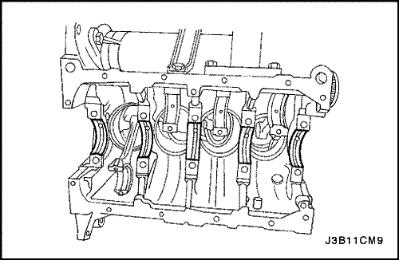
Procedimiento de montaje
- Recubra los cojinetes de bancada con aceite del motor.
- Monte los semicojinetes superiores de bancada en el bloque del motor.
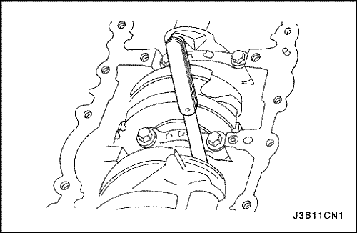
- Monte el cigüeñal.
- Monte los semicojinetes inferiores de bancada en las tapas de los cojinetes.
- Compruebe el juego axial del cigüeñal con los cojinetes de bancada montados.
- Compruebe el juego axial permitido del cigüeñal. Consulte el apartado "Especificaciones del motor" de esta sección.
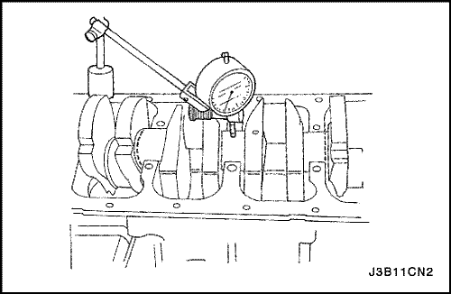
- Con el cigüeñal montado sobre los cojinetes de bancada delantero y trasero, compruebe la ovalización (excentricidad) permisible del muñón central de bancada. Consulte el apartado "Especificaciones del motor" de esta sección.
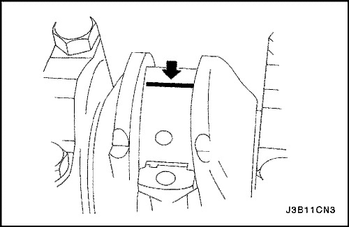
Importante: Engrase ligeramente los muñones y cojinetes de bancada del cigüeñal, de forma que el hilo de plástico de calibración no se rompa al desmontar las tapas de bancada.
- Compruebe las holguras de los cojinetes de bancada utilizando un plástico de calibración disponible comercialmente (hilos dúctiles de plástico).
- Corte los hilos del plástico de calibración a una longitud igual a la anchura de los cojinetes. Colóquelos axialmente entre los muñones y los cojinetes de bancada.
- Monte las tapas de bancada del cigüeñal y sus tornillos.
Apretar
Apriete los tornillos de las tapas de bancada del cigüeñal hasta 50 N•m (37 lb-pie) más 45 grados y más 15 grados.
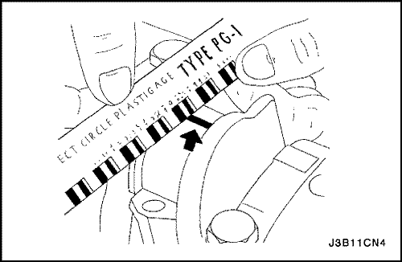
- Desmonte los tornillos y las tapas de bancada.
- Mida la anchura de los hilos del plástico de calibración aplastados utilizando una regla (los plásticos de calibración se encuentran disponibles en distintos márgenes de tolerancia).
- Compruebe las holguras de los cojinetes de acuerdo con los márgenes de tolerancia permitidos. Consulte el apartado "Especificaciones del motor" de esta sección.
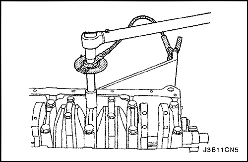
- Aplique un reborde de un sellante adhesivo a las ranuras de las tapas de bancada del cigüeñal.
- Monte las tapas de bancada en el bloque del motor.
- Apriete las tapas de bancada utilizando tornillos nuevos.
Apretar
Apriete los tornillos de las tapas de bancada del cigüeñal hasta 50 N•m (37 lb-pie) con una llave dinamométrica. Use el medidor de par angular KM-470-B para apretar los tornillos de los cojinetes de bancada 45 grados más 15 grados.
Importante: Engrase ligeramente las muñequillas de biela y los cojinetes de biela, de forma que no se rompan los hilos del plástico de calibración cuando se desmonten las tapas de los cojinetes de biela.
- Compruebe las holguras de todos los cojinetes de biela utilizando plástico de calibración disponible comercialmente (hilos dúctiles de plástico).
- Corte los hilos del plástico de calibración con una longitud igual a la anchura de los cojinetes de biela. Colóquelos axialmente entre las muñequillas del cigüeñal y los cojinetes de biela.
- Monte las tapas de los cojinetes de biela.
Apretar
Apriete los tornillos de las tapas de los cojinetes de biela hasta 25 N•m (18 lb-pie) con una llave dinamométrica. Use el medidor de par angular KM-470-B para apretar los tornillos de las tapas de los cojinetes de biela 30 grados más 15 grados.
- Desmonte las tapas de los cojinetes de biela.
- Mida la anchura de los hilos del plástico de calibración aplastados utilizando una regla (los plásticos de calibración se encuentran disponibles en distintos márgenes de tolerancia).
- Compruebe las holguras de los cojinetes de acuerdo con los márgenes de tolerancia permitidos. Consulte el apartado "Especificaciones del motor" de esta sección.
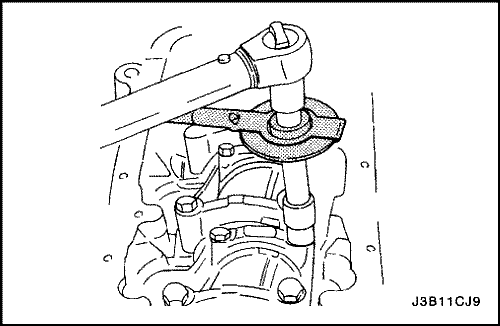
- Monte las tapas de los cojinetes de biela en las bielas.
- Apriete las tapas de los cojinetes de biela con unos tornillos nuevos.
Apretar
Apriete los tornillos de las tapas de los cojinetes de biela hasta 25 N•m (18 lb-pie) con una llave dinamométrica. Use el medidor de par angular KM-470-B para apretar los tornillos de las tapas de biela 30 grados más 15 grados.
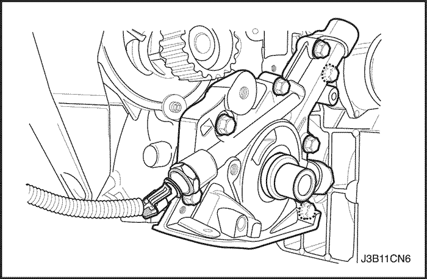
- Monte la bomba de aceite.
- Monte los tornillos de retención de la bomba de aceite.
Apretar
Par de apriete 10 N•m (89 lb-pulg.).
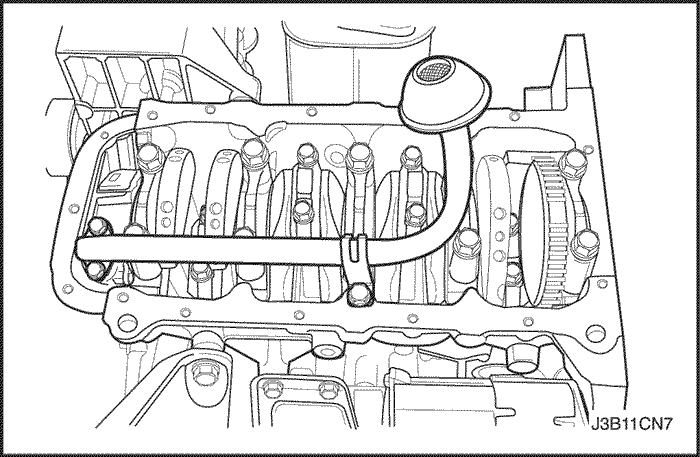
- Monte el tubo de aspiración de aceite.
- Coloque los tornillos del tubo de aspiración.
Apretar
Apriete los tornillos del tubo de aspiración de aceite hasta 10 N•m (89 lb-pulg.).
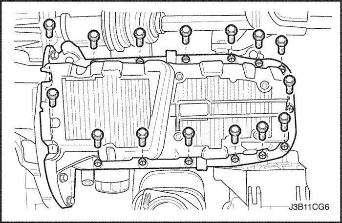
- Recubra la junta nueva del cárter de aceite con un compuesto sellante.
- Monte la junta del cárter del aceite en el cárter.
- Monte el cárter del aceite.
- Coloque los tornillos de fijación del cárter del aceite.
Apretar
Par de apriete 10 N•m (89 lb-pulg.).
- Haga girar el motor sobre su soporte de reparación KM-412.
- Monte la culata. Consulte el apartado "Culata y junta de culata" de esta sección.
- Monte el dispositivo de elevación del motor.
- Desmonte el motor de su soporte de reparación KM-412.
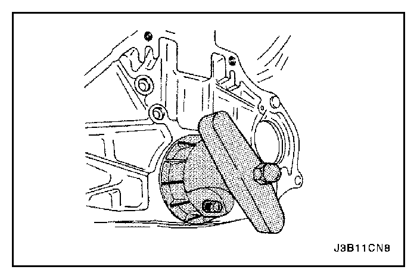
- Monte un nuevo retén de aceite trasero del cigüeñal utilizando el instalador J-36792 o KM-635.
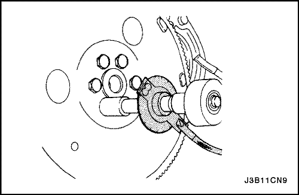
- Monte el volante motor o la placa de acoplamiento flexible.
- Ponga los tornillos del volante motor o de la placa de acoplamiento flexible.
Apretar
Apriete los tornillos del volante motor hasta 35 N•m (25 lb-pie). Use el medidor de par angular KM-470-B para apretar los tornillos una vuelta de 30 grados más otra vuelta de 15 grados. En vehículos con caja de cambios automática, apriete los tornillos de la placa de acoplamiento flexible hasta 45 N•m (33 lb-pie).
- Monte el motor en el vehículo. Consulte el apartado "Motor" de esta sección.
Cojinetes de bancada y de biela - plástico de calibración
Herramientas necesarias
Medidor de par angular KM-470-B
Procedimiento de inspección - Cigüeñal
- Recubra los cojinetes de bancada con aceite del motor.
- Monte los semicojinetes superiores de bancada en los muñones de bancada del cigüeñal.
- Monte los semicojinetes de bancada inferiores en las tapas de bancada del cigüeñal.
- Monte el cigüeñal.
- Compruebe el juego axial del cigüeñal con los cojinetes de bancada montados.
- Compruebe el juego axial permitido del cigüeñal. Consulte el apartado "Especificaciones del motor" de esta sección.
- Con el cigüeñal montado sobre los cojinetes de bancada delantero y trasero, compruebe la ovalización (excentricidad) permisible del muñón central de bancada. Consulte el apartado "Especificaciones del motor" de esta sección.
Aviso: Engrase ligeramente los muñones y cojinetes de bancada del cigüeñal, de forma que el hilo de plástico de calibración no se rompa al desmontar las tapas de bancada.
- Compruebe las holguras de los cojinetes de bancada utilizando un plástico de calibración disponible comercialmente (hilos dúctiles de plástico).
- Corte los hilos del plástico de calibración a una longitud igual a la anchura de los cojinetes. Colóquelos axialmente entre los muñones y los cojinetes de bancada.
- Monte las tapas de bancada del cigüeñal.
- Ponga los tornillos de las tapas de bancada del cigüeñal.
Apretar
Apriete los tornillos de las tapas de bancada del cigüeñal hasta 50 N•m (37 lb-pie). Use el medidor de par angular KM-470-B para apretar los tornillos de las tapas de bancada del cigüeñal 45 grados más 15 grados.
- Desmonte las tapas de bancada del cigüeñal.
- Mida la anchura de los hilos del plástico de calibración aplastados utilizando una regla (los plásticos de calibración se encuentran disponibles en distintos márgenes de tolerancia).
- Compruebe las holguras de los cojinetes de acuerdo con los márgenes de tolerancia permitidos. Consulte el apartado "Especificaciones del motor" de esta sección.
Procedimiento de inspección - Bielas
- Recubra los cojinetes de biela con aceite del motor.
- Monte los semicojinetes superiores de biela en las muñequillas de biela.
- Monte los semicojinetes inferiores de biela en las tapas de los cojinetes de biela.
Aviso: Engrase ligeramente las muñequillas de biela y los cojinetes de biela, de forma que no se rompan los hilos del plástico de calibración cuando se desmonten las tapas de los cojinetes de biela.
- Compruebe las holguras de todos los cojinetes de biela utilizando plástico de calibración disponible comercialmente (hilos dúctiles de plástico).
- Corte los hilos del plástico de calibración a una longitud igual a la anchura de los cojinetes. Colóquelos axialmente entre las muñequillas del cigüeñal y los cojinetes de biela.
- Monte las tapas de los cojinetes de biela.
- Ponga los tornillos de las tapas de los cojinetes de biela.
Apretar
Apriete los tornillos de las tapas de los cojinetes de biela hasta 25 N•m (18 lb-pie). Use el medidor de par angular KM-470-B para apretar los tornillos otros 30 grados más 15 grados.
- Desmonte las tapas de los cojinetes de biela.
- Mida la anchura de los hilos del plástico de calibración aplastados utilizando una regla (los plásticos de calibración se encuentran disponibles en distintos márgenes de tolerancia).
- Compruebe las holguras de los cojinetes de acuerdo con los márgenes de tolerancia permitidos. Consulte el apartado "Especificaciones del motor" de esta sección.
 | |  | |
| © Copyright Chevrolet Europe. Reservados todos los derechos |